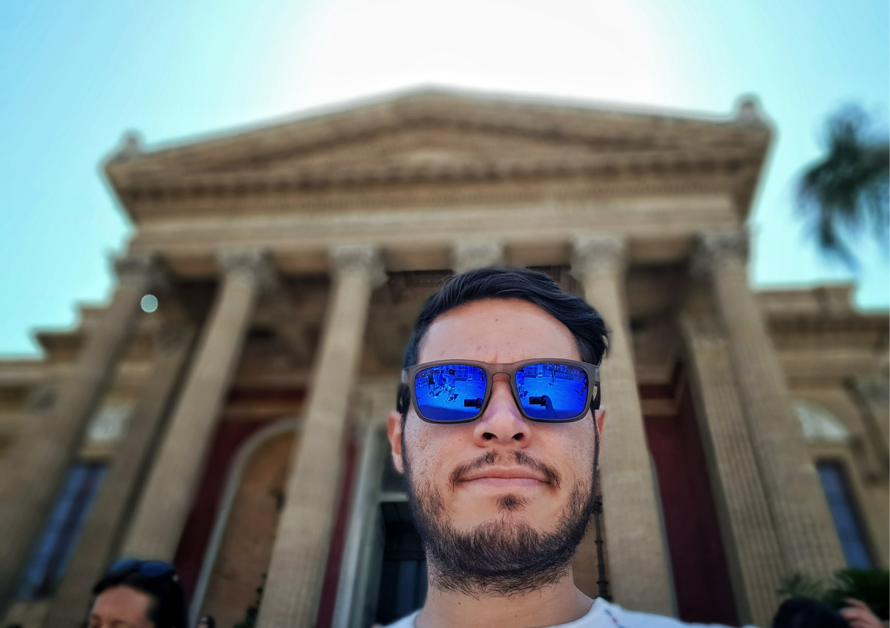

About me
Hello! My name is Eduardo and I was born about 30 years ago in the beautiful city of Colima which is the unofficial branch office of hell (its really so damn hot all year round!).
I lived there for several years but eventually had to move out because of my studies. Before going on, here's a piece of advice for all of you young people out there: do not go to university right after highschool. Better to do some traveling, learning a language and working, these things really give you another perspective and they even help you realize what you are really good for. I wish someone had told me that back then, perhaps I would've chosen another career or at the very least I would've asked the right questions in class.
Anyway, I decided to go to design school because when I was growing up, I always wanted to know how things worked and how they were made. Engineering had a lot of weird and extremely difficult sciences and I wasn't up for that at all so I took another approach and graduated as an Industrial Designer, which pretty much gave me an insight on how things are made. Everything I was taught was very cool and all that but I didn't feel it was enough.
After a while trying to fall in line and after a couple of unsatisfying jobs, I decided I had had enough and I was ready to change some things. I packed my bags, sold what I could, and bought a one way ticket to Germany. Long story short, 6 years, 5 cities, 4 countries and hundreds of crazy and amazing stories later, I'm sitting in a cafe in Almaty, Kazakhstan writing this little bio.
If you managed to get this far, I congratulate you, and if you want to know some interesting facts about me then here they are: I'm a freelance data visualization specialist and soon to be web designer for Fairtrade, FSC, and FLOCERT (all based in Germany). However, my true passion turned out to be food, cooking to be more specific, I just love the whole experience, one can learn a lot of a person/culture just by listening to their stories around food.